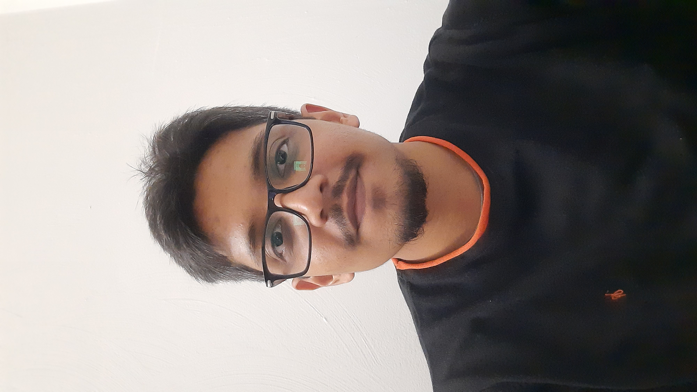

|
Arpit Thool
I am a graduate student at Virginia Tech, pursuing my Master's in Computer Science degree from the College of Engineering in Blacksburg, Virginia.
My research interest lies in Software Engineering. For my Master's thesis I am working with Dr. Chris Brown at Virginia Tech's Computer Science department.
Feel free to check out my resume or reach out me via email.
Research /
Email /
Resume /
LinkedIn /
Github
|

|
Education
Master's in Computer Science | Virginia Tech | Virginia, United States
CGPA : 3.85/4.0 | Aug 2021 - May 2023 (Expected)
Bachelor's in Computer Engineering | SPPU | Pune, India
CGPA : 3.62/4.0 | Aug 2016 - May 2020
Relevant Coursework
Algorithms, Data Structures, Object Oriented Programming, Operating Systems, Database Systems, Software Engineering, Project Management, Web & Cloud Technology, Operating Systems, Information Storage and Retrieval, Fundamentals of Information Security
|
Skills
-
Programming Languages : Java, Python, PHP, Javascript
-
Database Technologies : MySQL, Redis, NoSQL, MongoDB
-
Other Technologies : AWS, GCP, Docker, Kubernetes K8, API, REST APIs, Git, GitHub, GitLab, HTTP, JSON, Spring boot, Django, Ruby on Rails, Linux, Jenkins, Vue JS, HTML5
-
Industry Skills: Software Development, Backend, Test Driven Development, SOLID Principles, Agile Development, Digital Transformation, OOP, Debugging, Troubleshooting, CICD
-
Soft Skills : Effective communication, Goal oriented, Open-minded, Adaptable, Flexible, Critical thinking and Problem solving
|
Work Expereince
Software Engineer @ Virginia Tech | Virginia, United States | Sep 2021 - Present
- Contributed to development and maintenance of software applications writing high-quality and secure Java code.
-
Researched new technologies for solving problems faced by stakeholders.
-
Orchestrated a software system in Java to communicate with ZAP and run scans on web applications and minimized project costs by 80%. This was done with the help of API calls and efficiently processing JSON data.
FullStack Software Engineer @ Acquia | Pune, India | Sep 2020 - July 2021
-
Fashioned a cloud based email automation SaaS application with web service, code, API, User Interface, Database, and MySQL, NoSQL(Redis) development.
-
Orchestrated the MVC software architecture with observers and event triggers according to business requirements.
-
Modeled and implemented an efficient solution to synchronize the creation, modification and deletion of an asset in the parent template to children templates, saving the client up to 60% of their resources spent on replicating templates.
-
Consistently stood among the top 3 contributors in every sprint.
Software Engineer Intern @ Technogong | Pune, India | Sep 2019 - Mar 2020
-
Designed and developed ‘Bizhawk’, an android application for managing day-to-day activities in a restaurant. Saved on estimated costs by approximately 75% with near zero-defect delivery.
-
Managed the project using Agile methodology to meet sprint goals.
-
Implemented app activities in high-quality Java code, wrote PHP scripts to run on a LAMP server to implement software functional requirements.
|
Leadership Expereince
Mentor @ Acquia | Pune, India | May 2021 - July 2021
-
Mentored new college graduates joining Acquia Engineering team. Had weekly meetings to check their progress and guide them.
-
Helped and advised the mentees on which technologies to revise and focus on, for a smooth transition onto their respective projects.
|
Projects
Travel Diary & Planner | Oct 2021 - Dec 2021 | Github Link
-
Hosted a web application on an AWS instance using Apache server for currency conversion, hotel availability, visualizing COVID-19 statistics and weather lookup at different locations with the help of REST APIs using JSON data.
-
An authenticated user is able to store and view various types of files just like an online diary.
-
Used Java Jakarta EE web framework and implemented the database using MySQL.
Car Mapping | Oct 2020 - Nov 2020 | Github Link
-
Hosted a flask web app on Heroku to solve a competitive coding task, the database was implemented using MongoDB.
-
Built a CICD pipeline using a Jenkins server, and GitHub webhooks to automate testing and deployment.
-
Collaborated within a team of three people and followed the Agile Process Model for the development process.
|
|
{kind=link}